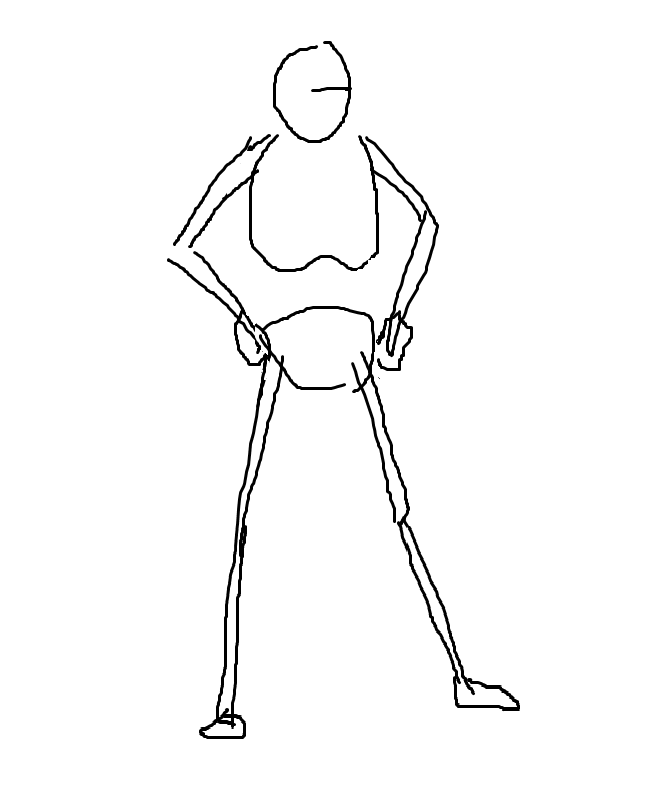
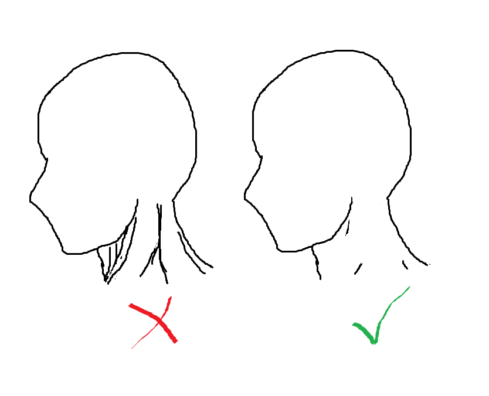
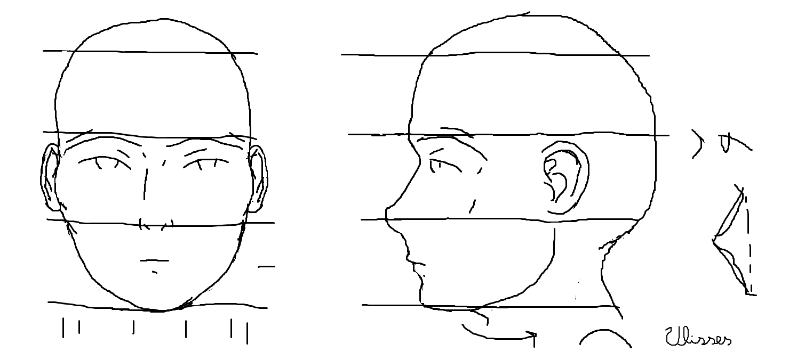
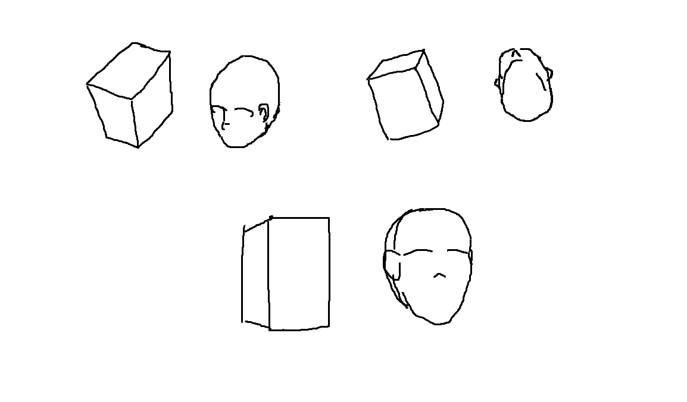

Certo, digamos que você queira aprender a desenhar e alguém te diz que tem de aprender a anatomia. Porquê? Bem, digamos que é porque a a maioria dos desenhos têm pessoas. Isso acontece porque desenhos servem muito bem para contar histórias, expressar emoções, e tornar menos efêmera nossa passagem sobre esse mundo, e fazer qualquer uma dessas coisas fica difícil sem pessoas. Então, no intúito de que desenhos com pessoas não causem desconforto aos olhos, se aprende anatomia humana (daqui para frente escrevo só anatomia).
A primeira parte é entender o que mais ocupa volume no desenho. A estrutura básica de uma pessoa é dada por seu esqueleto, que contém o crânio, a caixa torácica, pelve e ossos dos braços e pernas. Simplificando essas partes, temos algo assim:
É o esqueleto é que dita a postura, afinal ele é rígido e as outras partes são mantidas nele.
Vale se lembrar de coisas como:
Os músculos preenchem grande parte do volume, então é necessário conhecer os mais básicos, mas não para sair destacando eles em cada desenho, afinal de contas não estão sempre contraídos. Como têm função de aproximar, normalmente, duas partes, é fácil se lembrar deles sabendo onde começam e onde terminam.
Aqui um exemplo rápido de porque não vou entrar em detalhes de cada músculo nessa página:
Simplesmente não é necessário aprender sobre dezenas de músculos se eles não aparecem ou se você pode simplesmente usar uma imagem de referência. Isso funciona muito bem, por exemplo, para os músculos do antebraço, que são muitos (para fazer os inúmeros movimentos das mãos) e que na maioria das pessoas aparecem apenas formando um cilindro de raio variável.
Essa parte é essencialmente complicada porque já foi provado que a espécie humana evoluiu para reconhecer rostos de maneira especial (conseguimos identificar alguém em uma multidão se já o conhecemos). Então aprender a desenhar rostos é principalmente conseguir estimar distâncias entre olhos, lábios, nariz, etc, e ser capaz de pegar pequenas diferenças (como a prega epicântica, presente em bebês e asiáticos)
Muitas pessoas começam tentando desenhar rostos genéricos, que seguem à risca algumas proporções. Isso ajuda, mas não é o suficiente. Por exemplo, observe esse rosto genérico:
Nele,
Mas o importante é que representa bem uma forma tridimensional. E seria muito difícil aplicar regras à risca quando se combina perspectiva.
Olhando um rosto de frente e perto, com perspectiva, as orelhas podem até sumir, as sobrancelhas passam as bordas laterais, e o queixo afina. E esse tipo de coisa me pertubava muito quando tentava aplicar regrinhas (aprendi a corrigir isso modelando em 3D no computador, o que aliás eu imagino que vá substituir desenhos em animações, por exemplo).
